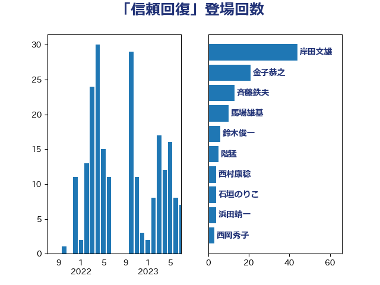

単語「信頼回復」

| 岸田文雄 | 自由民主党 | 44 回 |
| 金子恭之 | 自由民主党 | 21 回 |
| 斉藤鉄夫 | 公明党 | 13 回 |
| 馬場雄基 | 立憲民主党 | 10 回 |
| 鈴木俊一 | 自由民主党 | 6 回 |
| 階猛 | 立憲民主党 | 5 回 |
| 西村康稔 | 自由民主党 | 4 回 |
| 石垣のりこ | 立憲民主党 | 4 回 |
| 浜田靖一 | 自由民主党 | 4 回 |
| 西岡秀子 | 国民民主党 | 3 回 |
| 森山浩行 | 立憲民主党 | 3 回 |
| 松本剛明 | 自由民主党 | 3 回 |
| 中野洋昌 | 公明党 | 3 回 |
| 中山展宏 | 自由民主党 | 3 回 |
| 鬼木誠 | 立憲民主党 | 2 回 |
| 里見隆治 | 公明党 | 2 回 |
| 藤岡隆雄 | 立憲民主党 | 2 回 |
| 石井苗子 | 日本維新の会 | 2 回 |
| 永岡桂子 | 自由民主党 | 2 回 |
| 岩田和親 | 自由民主党 | 2 回 |
| 大野泰正 | 自由民主党 | 2 回 |
| 塩田博昭 | 公明党 | 2 回 |
| 加田裕之 | 自由民主党 | 2 回 |
| 中司宏 | 日本維新の会 | 2 回 |
| 高橋光男 | 公明党 | 1 回 |
| 長峯誠 | 自由民主党 | 1 回 |
| 鈴木庸介 | 立憲民主党 | 1 回 |
| 鈴木宗男 | 日本維新の会 | 1 回 |
| 野田国義 | 立憲民主党 | 1 回 |
| 重徳和彦 | 立憲民主党 | 1 回 |
| 道下大樹 | 立憲民主党 | 1 回 |
| 谷合正明 | 公明党 | 1 回 |
| 葉梨康弘 | 自由民主党 | 1 回 |
| 芳賀道也 | 国民民主党 | 1 回 |
| 美延映夫 | 日本維新の会 | 1 回 |
| 米山隆一 | 立憲民主党 | 1 回 |
| 神谷政幸 | 自由民主党 | 1 回 |
| 神津たけし | 立憲民主党 | 1 回 |
| 石川博崇 | 公明党 | 1 回 |
| 漆間譲司 | 日本維新の会 | 1 回 |
| 湯原俊二 | 立憲民主党 | 1 回 |
| 渡辺猛之 | 自由民主党 | 1 回 |
| 河野太郎 | 自由民主党 | 1 回 |
| 河西宏一 | 公明党 | 1 回 |
| 沢田良 | 日本維新の会 | 1 回 |
| 池畑浩太朗 | 日本維新の会 | 1 回 |
| 森本真治 | 立憲民主党 | 1 回 |
| 柳ヶ瀬裕文 | 日本維新の会 | 1 回 |
| 柚木道義 | 立憲民主党 | 1 回 |
| 松山政司 | 自由民主党 | 1 回 |
| 杉本和巳 | 日本維新の会 | 1 回 |
| 早稲田ゆき | 立憲民主党 | 1 回 |
| 徳永エリ | 立憲民主党 | 1 回 |
| 後藤茂之 | 自由民主党 | 1 回 |
| 平林晃 | 公明党 | 1 回 |
| 平木大作 | 公明党 | 1 回 |
| 岸真紀子 | 立憲民主党 | 1 回 |
| 山田太郎 | 自由民主党 | 1 回 |
| 山口那津男 | 公明党 | 1 回 |
| 小野泰輔 | 日本維新の会 | 1 回 |
| 小田原潔 | 自由民主党 | 1 回 |
| 小沢雅仁 | 立憲民主党 | 1 回 |
| 小川淳也 | 立憲民主党 | 1 回 |
| 小宮山泰子 | 立憲民主党 | 1 回 |
| 寺田稔 | 自由民主党 | 1 回 |
| 宮本岳志 | 日本共産党 | 1 回 |
| 奥野総一郎 | 立憲民主党 | 1 回 |
| 城井崇 | 立憲民主党 | 1 回 |
| 吉田はるみ | 立憲民主党 | 1 回 |
| 吉川沙織 | 立憲民主党 | 1 回 |
| 佐藤正久 | 自由民主党 | 1 回 |
| 三浦靖 | 自由民主党 | 1 回 |